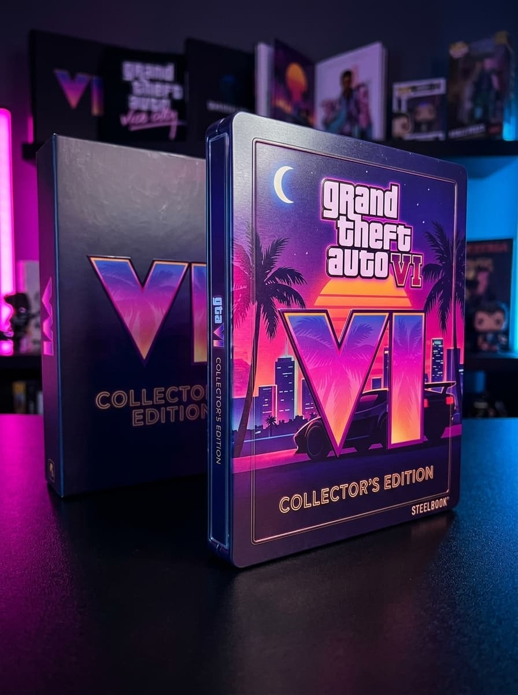

Caja Metálica Steelbook
Edición Limitada Vice City
La caja metálica oficial de colección de GTA VI cuenta con un acabado neón inspirado en el skyline nocturno de Vice City. Un objeto imprescindible para los coleccionistas que buscan conservar el disco del juego en un estuche resistente de diseño exclusivo.
